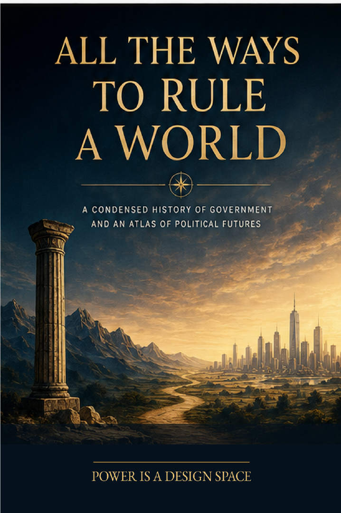

Power, Institutions & Society · Axiologic Research Editions
All the Ways to Rule a World
A Condensed History of Sovereignty and an Atlas of Political Futures
Enter a comparative map of political forms and ask which institutions can coordinate at scale while keeping power visible, contestable, and able to learn.
Rule is a design space
Monarchy, republic, empire, democracy, federation, network, and platform are not merely labels in a historical cabinet. Each solves some coordination problems while creating particular routes for capture, exclusion, opacity, and error. The book begins below regime names, with the practical problem of aligning action among people who do not share complete knowledge or interests.
That starting point makes comparison possible without pretending that every society follows one path. Scale, coercion, legitimacy, information, exit, and the distribution of corrective power matter as much as formal constitutions.
History without inevitability
The movement from chiefdoms and sacred kingship to republics, representative government, bureaucratic states, and global systems is not presented as a staircase toward a final regime. It is a record of recurring trade-offs: integration can secure peace while concentrating command; participation can broaden legitimacy while dispersing responsibility; rights can limit power while depending on institutions able to enforce them.
Power is not only a possession. It is an arrangement of attention, authority, memory, and correction.
Political futures still have to be governed
Digital communities, city-regions, distributed protocols, artificial agents, and planetary problems make old borders less sufficient, but they do not remove the need for public justification. The final chapters use speculative futures to ask what accountability, meaningful exit, representation, and contested authority could look like when sovereignty is layered rather than singular.